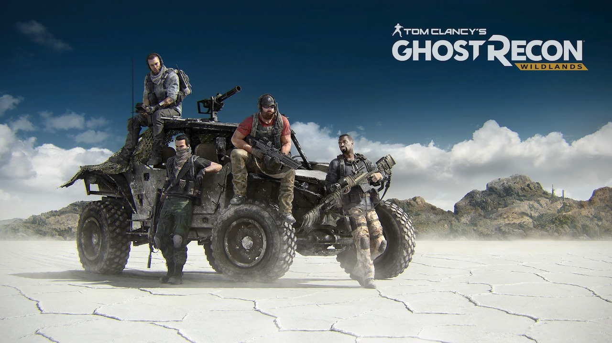

4 kwietnia 2018
Czasy, w których do Pegasusa podłączaliśmy właśnie zakupiony kartridż, czy też do Playstation wrzucaliśmy przyniesioną ze sklepu płytkę i już po chwili mogliśmy grać, stety bądź nie, bezpowrotnie minęły. W dobie szerokopasmowego internetu producenci zmuszają nas do instalowania gier na twardych dyskach konsol, by móc później łatać to, czego nie zdążyli przed terminem premiery. Oczywiście ma to również swoje plusy, bo zakupy możemy robić na kanapie przed telewizorem, nie wychodząc z domu i nie czekając na przesyłkę.

Tyle tytułem wstępu, bo nie do końca o tym chciałem. Ostatnio narzekałem na dystrybucję cyfrową, dziś trochę ją pochwalę. Ale żeby nie było samego słodzenia, na początek oberwie się nieco Ubisoftowi. Ja, zagorzały single player, zachęcony naszą grupową secret-levelową inicjatywą, postanowiłem wreszcie zrobić użytek z abonamentu PlayStation Plus i pograć w kilka osób w trybie kooperacji. Stanęło na Ghost Recon: Wildlands. Także dlatego, że gra oferuje darmowe pięć godzin rozgrywki. Tu plus dla Ubisoftu, bo możliwość wypróbowania gry przed zakupem należy dziś do rzadkości.
Ściągnąłem w ubiegłym tygodniu te kilkadziesiąt gigabajtów, gra się zainstalowała i pół godziny potem już biegałem po mapie. Spodobało mi się, więc wczoraj pobiegłem do sklepu po płytkę. Wracam do domu, wkładam Blu-Ray'a do konsoli i… przecieram oczy ze zdumienia. W menu konsoli pojawia się druga instancja Ghost Recona. Trudno, uruchamiam tą starą. Gra odpala się i wita mnie komunikatem: "Zostały Ci dwie godziny gry w demo. Czy chcesz zakupić pełną wersję?" Jasny gwint! Przecież już kupiłem!
No nic, spróbujmy w takim razie z drugim Ghost Reconem. Sekundę po potwierdzeniu X-em wyboru w menu pojawia się okienko ściągania patcha. Kilkanaście GB i kolejne 10 minut z głowy. Myślę sobie kilkanaście to nie kilkadziesiąt, więc za chwilę dołączę do ekipy, która już na mnie czeka. Guzik z pętelką! Po ściągnięciu łatki, gra się uruchomiła i dopiero wtedy zaczęła prawdziwą instalację. Trwało to równo 40 minut. Wliczając download poprawki, perypetie z próbą przekonania wersji cyfrowej do zobaczenia płytki w napędzie straciłem niemal godzinę.
Podsumowując (TL;DR)